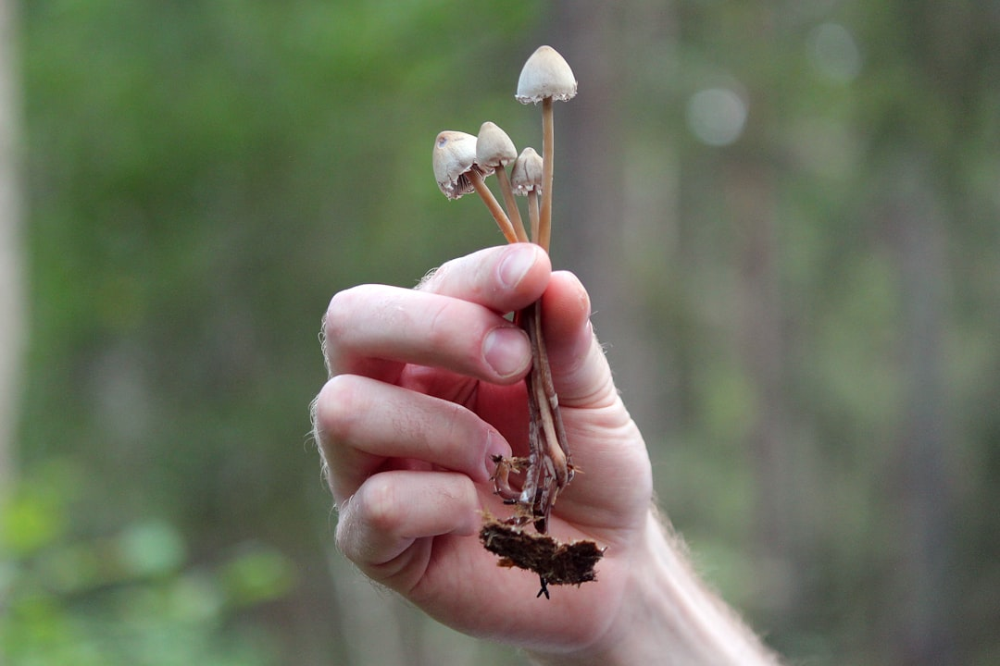

News
Magic mushrooms online Canada
Magic mushrooms online Canada
Legal status of magic mushrooms in Canada
Regulatory changes and updates
Provincial differences in regulations
Online Purchasing Options
Online Purchasing Options
Reputable online vendors in Canada
Payment methods for online purchases
Shipping and delivery options
Health and Safety Considerations
Health and Safety Considerations
Potential health benefits of magic mushrooms
Risks and side effects
Guidelines for safe usage
About Us
Comparing Online Dispensaries for Buying Magic Mushrooms in Canada
Jun 25, 2025
Navigating the World of Online Dispensaries for Magic Mushrooms in Canada In recent years, the perception and legality of magic mushrooms have undergone significant changes, especially in countries like Canada.. With the rise of e-commerce and shifting legal landscapes, many Canadians now find themselves exploring online dispensaries as a means to purchase these psychedelic fungi.

Health Benefits and Risks of Psilocybin
Jun 25, 2025
Health Benefits and Risks of Psilocybin In recent years, the discourse around psychedelics has undergone a remarkable transformation.. Central to this discussion is psilocybin, a naturally occurring compound found in certain species of mushrooms.
How to Enhance Creativity and Well-being with Magic Mushrooms: The Canadian Way
Jun 25, 2025
How to Enhance Creativity and Well-being with Magic Mushrooms: The Canadian Way In recent years, there has been a growing interest in the potential benefits of magic mushrooms, particularly in Canada, where attitudes toward psychedelics are gradually changing.. This shift is fueled by a combination of scientific research and societal openness to alternative approaches to mental health and personal development.
How to Experience the Best of Psychedelics: Buying Magic Mushrooms in Canada
Jun 25, 2025
How to Experience the Best of Psychedelics: Buying Magic Mushrooms in Canada In recent years, there has been a resurgence of interest in psychedelics for both recreational and therapeutic purposes.. Among the most popular of these are magic mushrooms, known scientifically as psilocybin mushrooms.
How to Find High-Quality Magic Mushrooms Online in Canada
Jun 25, 2025
Navigating the World of High-Quality Magic Mushrooms Online in Canada In recent years, the interest in psychedelic substances like magic mushrooms has been on the rise, particularly for their potential therapeutic benefits.. In Canada, where the legal landscape around psychedelics is gradually shifting, many individuals are seeking reliable ways to procure high-quality magic mushrooms online.
How to Safely Buy and Use Magic Mushrooms Online in Canada
Jun 25, 2025
Navigating the Journey: How to Safely Buy and Use Magic Mushrooms Online in Canada In recent years, the conversation around psychedelics has shifted significantly.. With growing interest in their potential therapeutic benefits, magic mushrooms have stepped into the spotlight.
How to Start Your Psychedelic Journey with Magic Mushrooms from Canada
Jun 25, 2025
Embarking on a psychedelic journey with magic mushrooms can be a profound and transformative experience.. For many, this journey offers an opportunity for self-discovery, healing, and connection to the world around them.
How to Transform Your Life with Magic Mushrooms: Tips for Canadians
Jun 25, 2025
How to Transform Your Life with Magic Mushrooms: Tips for Canadians In the ever-evolving landscape of self-discovery and personal growth, magic mushrooms have emerged as a fascinating option for those seeking transformation.. For Canadians, this journey is particularly timely given the recent shifts in legislation and growing acceptance of psychedelics for therapeutic use.
Legal Status of Magic Mushrooms in Canada
Jun 25, 2025
The legal status of magic mushrooms, scientifically known as psilocybin mushrooms, in Canada is a topic that has garnered significant attention and debate in recent years.. As societys understanding of psychedelics evolves, so too does the conversation surrounding their potential therapeutic benefits and legal implications.
Personal Experiences: Magic Mushroom Trips and Transformations
Jun 25, 2025
Personal Experiences: Magic Mushroom Trips and Transformations Magic mushrooms, or psilocybin mushrooms, have been a topic of intrigue and debate for decades.. These naturally occurring fungi contain the psychoactive compound psilocybin, which can induce hallucinations and altered states of consciousness.
The Growing Trend of Microdosing Psilocybin in Canada
Jun 25, 2025
The Growing Trend of Microdosing Psilocybin in Canada In recent years, a fascinating trend has been quietly unfolding across Canada: the practice of microdosing psilocybin.. This involves consuming very small, sub-perceptual doses of the psychedelic compound found in magic mushrooms.
What is Driving the Popularity of Magic Mushrooms Sales Online in Canada?
Jun 25, 2025
The popularity of magic mushrooms, scientifically known as psilocybin mushrooms, has seen a significant surge in recent years, especially in Canada where online sales are booming.. This trend can be attributed to a confluence of cultural shifts, legal developments, and growing research into the potential benefits of psychedelics.
What is Required for Ordering Magic Mushrooms Legally Online in Canada?
Jun 25, 2025
Navigating the Legal Landscape of Ordering Magic Mushrooms Online in Canada In recent years, the conversation around psychedelics has undergone a significant transformation.. Once shrouded in controversy and stigma, substances like magic mushrooms are now receiving attention for their potential therapeutic benefits.
What is the Best Website to Purchase Magic Mushrooms in Canada?
Jun 25, 2025
The use of magic mushrooms, or psilocybin mushrooms, has been a topic of growing interest and debate in recent years.. As their popularity increases for both recreational and therapeutic purposes, many Canadians are exploring options for purchasing these substances online.
What is the Effectiveness of Online Magic Mushroom Dispensaries in Canada?
Jun 25, 2025
The Effectiveness of Online Magic Mushroom Dispensaries in Canada In recent years, the landscape of psychedelic substances has undergone significant transformation in Canada, particularly concerning the accessibility and use of magic mushrooms, or psilocybin mushrooms.. With the gradual shift toward decriminalization and therapeutic exploration, online dispensaries have emerged as a pivotal avenue for accessing these substances.
What is the Legal Status of Magic Mushrooms Online in Canada?
Jun 25, 2025
The legal status of magic mushrooms in Canada, especially when it comes to their availability online, presents a fascinating intersection of law, culture, and societal change.. Magic mushrooms, known scientifically as psilocybin mushrooms, contain the psychoactive compound psilocybin, which has been at the center of both historical use and modern legal debates. In Canada, psilocybin is classified as a Schedule III substance under the Controlled Drugs and Substances Act.
What is the Process to Safely Buy Magic Mushrooms Online in Canada?
Jun 25, 2025
Navigating the Process of Safely Purchasing Magic Mushrooms Online in Canada In recent years, the conversation surrounding psychedelics has shifted from a hushed topic to a more mainstream discussion, particularly in countries like Canada where attitudes towards such substances are evolving.. With the growing interest in the potential therapeutic benefits of magic mushrooms—known scientifically as psilocybin mushrooms—many individuals are exploring avenues to purchase them safely online.